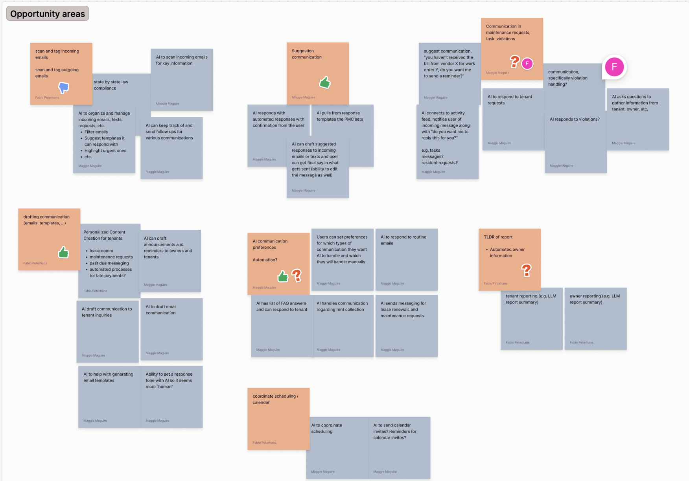
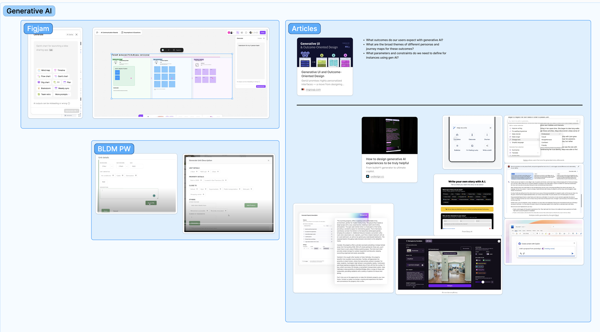
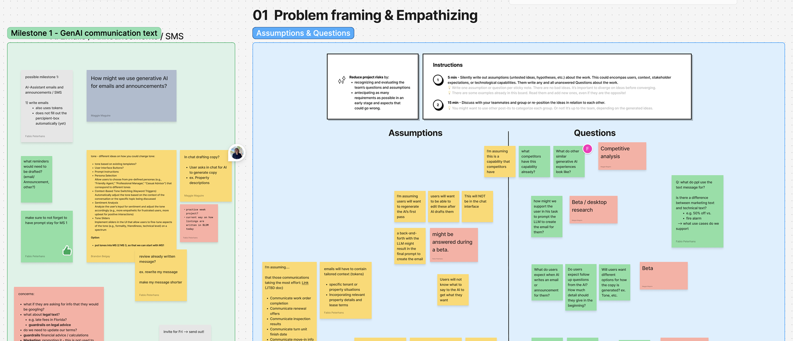
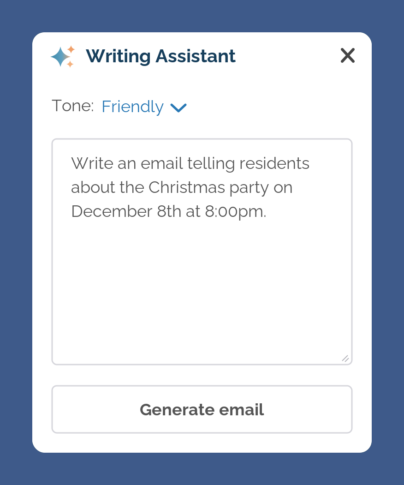
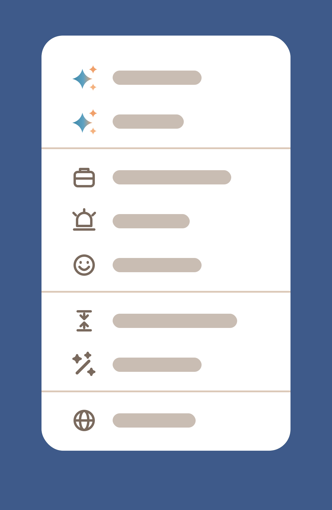
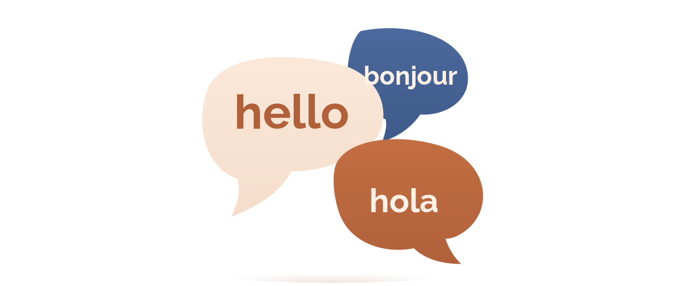
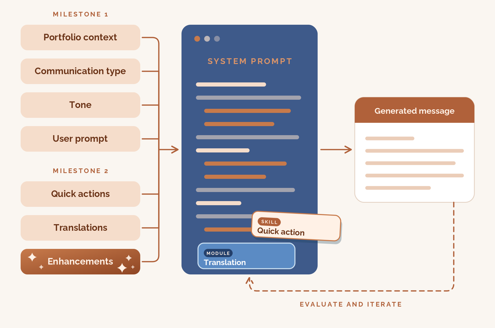

Writing Assistant
Project overview
Property managers want to use AI and automation to assist them in property management communications.
Property managers were using external AI tools to communicate with residents, but were losing time and lacking consistency with their responses when the AI tools didn't have the context of their portfolio.
Create an in-app AI tool to help property managers create and manage communication that automatically includes the context of their portfolio.
Understanding the user
Rather than start from scratch, the product designer and I began with what we already knew, reviewing existing strategic research on AI and automation in property management tech, along with direct customer feedback. This saved us time and research effort.
I need an easy way to generate communication messages within the platform, so that I don't have to formulate communications myself and switch tabs all the time.
Then, we worked with our product manager to organize these findings into opportunity areas, so we could begin identifying common themes in feedback on AI communications.

Communication ranked as the highest-priority area within AI features. Specifically, customers said AI would help most with generating mailings and templates, automating responses, and automating reminders, communications, and announcements.
Scoped to a fixed six-month development budget
Understanding the market
We filled in the gaps in the existing research with an analysis of the competitive landscape. We collected UX inspiration from direct competitors in property management tech and from companies considered leaders in the broader AI space, documented what might work for property managers, and used those findings to shape our low fidelity prototypes.

Defining the milestones

The product designer and I worked with our product manager and lead engineer to organize these opportunities into milestones grounded in two business goals: releasing AI features quickly and focusing on high-value features used across the platform. With a fixed six-month development budget for AI Communications, we had to prioritize what was realistically achievable, weighing effort versus impact and engineering feasibility.
This prioritization led to three milestones for AI Communications, one of which (AI recipient search) was cut because it required a lot of effort for the impact it would deliver in a first release.
We did flag it as a strong candidate for a future milestone, pending usage data to justify the investment.
Milestone 1 (Introduction)
We introduced the new Writing Assistant component within existing communication composers, allowing users to generate messages based on their prompts.
We wanted to get this base generation capability into property managers' hands as quickly as possible, so we could start collecting real beta feedback and usage data. While that was happening, we continued designing the more advanced capabilities for Milestone 2, building directly on top of this first release.

I reviewed the most common tone options from our competitive analysis and selected three that best fit property managers’ communications. Keeping it to three kept the choice simple for users.
To ship Milestone 1 quickly, we left most of the system prompt design to the engineers. Our requirements were that every output had to account for the portfolio context, communication type, tone, and the user's prompt.
Diving into content

For Milestone 2, we wanted to provide enhanced features for revising and editing content. Once again, we leaned on the user research and competitive analysis to determine the types of changes people most often wanted to make to AI-generated text.
We wanted the Writing Assistant to be accessible to all users, regardless of prompting experience. For Milestone 2, we kept the standard prompt input for users who had experience prompting or preferred to write their own prompts. We also added quick actions for users who were less experienced or less comfortable with prompting.

We also heard from users that they wanted translation options in French, Spanish, and English. So, I worked with engineers to provide high-level system prompts for each language, specifically favoring Québécois French and Latin American Spanish, since our property managers are based in North and South America.
I helped quality check during refinement as a Spanish and French speaker, but we eventually passed the feature to the bilingual quality assurance team for final translation testing.
Engineering system prompts
In Milestone 2, we built on the Milestone 1 system prompt and the translation instructions. Based on Milestone 1 feedback, we enhanced the main system prompt and wrote additional prompts for each quick action to better support users. I worked closely with engineers to review sample outputs and iterate on the system prompts, tweaking them until the results matched the tone and intent users expected.

Usability testing
I conducted usability testing with the enhanced Writing Assistant to validate that the revising and editing in Milestone 2 was useful, and that the quick actions were easily understood and helpful to users. Testing confirmed that these options were useful and easily understood by users, apart from one option, which I changed to provide more clarity.
Milestone 2 (Iteration)
In the final release, based on the usage data and feedback we collected from Milestone 1, we introduced the ability for users to revise and update message tone, enhance and adjust messaging with quick actions, and translate communications into French, Spanish, and English.
Conclusion
There has been strong early adoption, with the full impact still coming into focus, but as of March 11, 2025 there has been:
I don't send [messages] right away because sometimes I'm emotional and you don't want to send. Now I can write my nasty notes in the e-mail what I want to say and not have to wait 24 hours and go back and reread it before I send it out.
This project taught me a lot about system prompt design, the limitations of LLMs, and how critical it is to work in tandem with engineers for conversation design. It also led me to join an AI UX Evals team, where I help ensure AI features across the app respond in accordance with our guidelines and users’ expectations.
If I had to do this project all over again, I would have pushed to extend the timeline so that I could have worked even more closely with engineers during Milestone 1 to shape the system prompt, and thus the user experience. This would have put our Writing Assistant one step closer to being perfectly tailored to our users. Despite the timeline, I am thrilled this project has had such positive reviews from the users and has helped them communicate better and more easily with their staff and tenants.